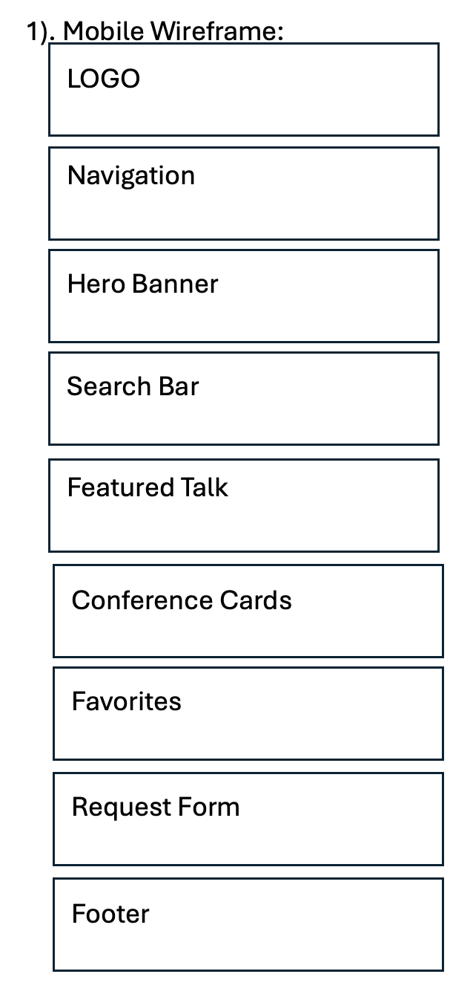
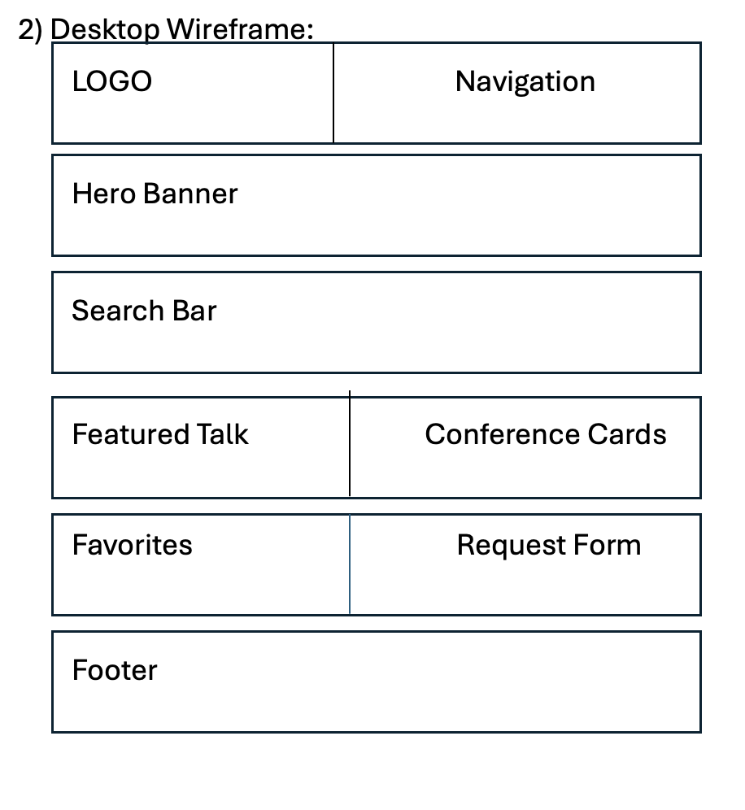

Deep Blue
Deep Blue
Hex value: #1F3A5F
This color will be used for the header, footer, navigation, major headings, and other important structural areas.
Individual Project Site Plan
The name Conference Compass reflects the purpose of the website: helping people quickly find direction through General Conference teachings. Just as a compass points travelers toward the right path, this website points users toward conference messages that relate to the questions, challenges, and experiences they face in everyday life.
Instead of searching through years of conference sessions, speakers, or hundreds of talks, users begin with a simple life need such as peace, hope, faith, forgiveness, strength, or guidance. The website then recommends a related General Conference message and provides a short summary that can be understood in about 30 seconds.
Conference Compass is designed as a quick-reference guide rather than a replacement for the Gospel Library. It helps members, visitors, and anyone seeking encouragement find a meaningful starting point, understand the main message, and continue studying the complete official talk.
Possible domain name: conferencecompass.org
The purpose of Conference Compass is to help users quickly find a conference message connected to something they need today. Instead of searching through conference years, sessions, speakers, or long lists of talks, users begin by choosing a simple life need such as peace, hope, direction, change, strength, or following Jesus Christ.
The site then presents a short summary that can be understood in about 30 seconds, one supporting scripture, one practical application, and a direct link to the complete official General Conference message.
The project is not intended to replace the Gospel Library or the original conference talks. It acts as a quick-reference guide that helps users find a meaningful starting point and then continue studying the complete message.
The completed website will help users:
Conference Compass is designed for anyone looking for guidance through General Conference teachings without spending time searching through decades of conference messages.
The website is especially helpful for people who vaguely remember a talk or gospel principle but cannot remember who gave the talk, when it was given, or where to find it. Conference Compass gathers related talks into one convenient place so users can quickly begin with a topic connected to what they are facing.
Whether someone is preparing a lesson, studying with family, seeking personal encouragement, or exploring General Conference for the first time, the website provides a quick starting point. Users can review the main ideas and then continue studying the complete official talk in the Gospel Library.
The following questions represent needs that members of the target audience may have:
The color scheme uses peaceful, dignified colors that support the spiritual and educational purpose of the website.
Hex value: #1F3A5F
This color will be used for the header, footer, navigation, major headings, and other important structural areas.
Hex value: #C89B3C
This color will be used for borders, buttons, links, icons, highlights, and other visual accents.
Hex value: #F7F3E8
This color will be used for the page background and light content areas to create a calm and welcoming reading experience.
Merriweather will be used for the website name, page headings, section headings, and important titles. Its traditional appearance supports the respectful and thoughtful purpose of the website.
Lato will be used for paragraphs, navigation links, buttons, labels, lists, and other general content. Its clean letter shapes make longer sections of information easy to read on both small and large screens.
The completed project will contain at least 15 dynamically generated study items. Each item will represent a selected General Conference message connected to one or more common needs.
Each talk may include:
JavaScript will load the General Conference study items from a local JSON file and display them dynamically.
The planned interactive features include:
The wireframes show the planned structure of the home page on a mobile screen and on a wider desktop or tablet screen. The sketches focus on page organization rather than colors, images, fonts, or detailed visual design.

